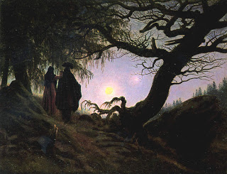

Shevuot (Oaths) 9 - A Sacrifice for God
The goat sacrifice brought on New Moon atones for the cases of ritual impurity which never become known to the person who was impure. That is why this sacrifice is called " a sacrifice for God " - for God alone knows of this impurity - these are the words of Rabbi Yehudah.
Additionally, as Resh Lakish explained, God said, "This he-goat shall be an atonement for something that I did." When God created the Sun and the Moon, they were initially of the same size. The Moon complained that it is not appropriate for two rulers to rule at once, and God said, "You are right, go and make yourself smaller." The Moon then reasoned that it was unjust that it should suffer just because it raised a valid point. In order to placate the Moon, God promised that the Jewish people will be bringing a sacrifice for God's sin, as it were, on every New Moon.
Art: Caspar David Friedrich - Man and Woman Contemplating the Moon